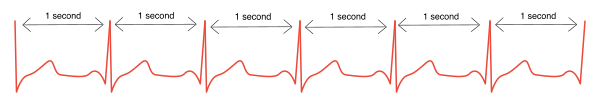
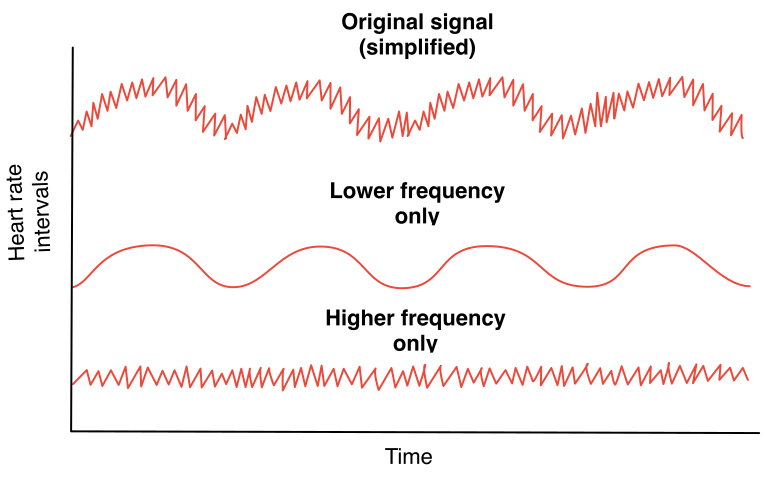

An Introduction to Heart Rate Variability
Back when I was a school boy, after a bout of running in the sports hall, our teacher told us to feel for our pulse and count each beat while he timed us. We then rested for a couple of minutes and counted again. The second count was obviously lower as my heart rate had slowed while resting between the first and second measurements.
This was a very simple test which only required a stopwatch while we counted the beats of our pulse. A test like that, provides a well known and simple measure of heart rate, usually expressed in Beats Per Minute (BPM). If, for example, we measure 60 BPM, this obviously means that in a span of a minute the heart beats 60 times or, on average, once per second.
But it is only the average.
During that school lesson, I learnt a simple test for measuring my heart rate recovery. But while I may not have thought of measuring it, it was already obvious to me that my heart beat faster when exercising and more slowly when I was resting. I also knew that my heart beat faster in other situations, such as when I felt stressed. But what I didn’t know was there are more subtle variations in heart rate that are less intuitive. Variations that are harder to measure, but if we do can provide further insight into our physical condition and how we are responding to our training.
Even when well rested, just after waking up, before exercising, or checking messages and the news, or even sitting up; even then there will be slight differences in the duration between each beat of your heart. Since we are not robots, a 60 BPM heart rate never really means one beat per second exactly. Our hearts don’t beat like a metronome, we can’t practice piano to it and expect to keep good time. The duration between beats is always changing as moment-to-moment and breath-to-breath, your nervous system instructs it to beat faster or slower.
So at rest, your heart is not beating like this:

But more like this:
These changes in duration between beats, is your Heart Beat Variablity or HRV.
Before studying this, my assumption was a big variability between heart beats must be a bad thing and a consistent rate would be good. In reality, the opposite is true. Of course, there are medical conditions where an irregular beat is a serious problem. But the kind of variations we look for in HRV follow a very different pattern, where the high variation is a healthy sign. In fact high Heart Rate Variability is associated with youth and fitness.
HRV has been recognised as a useful clinical tool since the 1960s, but until recently has been out of reach of most of us as it required a full ECG and complex statistical analysis. As a useful training tool for athletes, it is only recently that we have had the equipment available to practically measure and analyse HRV at home – namely an accurate heart rate strap and an app on your smart phone.
Suddenly we have access to a new strand of data, with the potential to provide insights into how your body is responding to your training as well as life’s other stresses.
When we look at this HRV data, we are not so much interested in fitness of the heart itself, but in what it can reveal about your physiology more widely. Your nervous system gives instructions to your heart based on activity elsewhere in your body, so slight changes in your heart beat can reveal what aspect of your nervous system is more active and therefore give clues to what type of processes are occuring within your body.
Your nervous system can be split into two branches:
- Sympathetic
- This is engaged more when working out and is often associated with ‘fight or flight’ responses and an increase in heart rate.
- Parasympathetic
- This is engaged more when resting. It is associated with recovery and digestion and a decrease in heart rate.
Although often thought of as opposite states, these are really two different systems that operate in tandem to control various processes in your body. Sympathetic is more active when exercising, and parasympathetic activity is related more to rest and recovery. A trend of higher parasympathetic activity is associated with younger as well as well trained individuals, but the activity of each of these systems also fluctuates day-to-day as your body responds to various stresses.
When we train, the sympathetic nervous system becomes more active and parasympathetic activity lowers; our heart rate increases, we start to use up resources such as blood glucose, and it becomes difficult to digest food.
During our downtime after exercise, we enter a recovery state. The parasympathetic system becomes more active, our heart rate lowers again, we start to digest food effectively, replenish glucose stores and rebuild damaged tissues.
Measuring HRV during exercise is particularly difficult, but a measurement at rest (ideally first thing in the morning) is a non-invasive way of monitoring this nervous system activity while we recover. This gives us an insight into how our nervous system is acting and consequently how well we are responding to the training. A trend to more parasympathetic activity generally reflects a higher ability to absorb the recent training load.
Variability in your heart rate is able to reveal this because the parasympathetic system has a more direct connection to the heart than the sympathetic nervous system. This means parasympathic signals have more frequent effects on heart rate and, when measured, show up as a higher frequency signal. Sympathetic impulses affect heart rate over longer spans of time and therefore have a longer wavelength when looking at a chart of HRV over time. This helps us separate out which part of the nervous system has caused the change in heart rythmn, and from that we can get a picture of the degree that those systems are active.
A very simplified chart of HR intervals over time, may look like this:

In a chart of real data, the longer term waves are harder to spot amongst the noise. This is particularly true with short measurements of a few minutes.
When your HRV is trending with more parasympathetic nervous system activity, that is generally a sign that you are recovering well and absorbing your training load. The harder to measure, sympathetic nervous system activity reveals how much stress your body is responding to (likely due to your training). By looking at the absolute and trending HRV values, we can see the impact of training on your ability to recover, providing physiological data on when to increase training load and when to cut back.
One interesting aspect of this, is other stresses also affect HRV and so may keep the body with permanently lower parasympathetic activity. Recording HRV therefore may be not only a good way of measuring recovery from training stress, but also other stresses from sleep depreviation, work deadlines, illness, nutrition choices and general health conditions which obviously also affect your fitness goals.
Since HRV is affected in both the short and long term, some care has to be taken in how we interpret the data. Our level of recent activity, our breathing rate, the position of our body, stress levels as well as the equipment we use to perform the measurement all impact the results. So we need to take care in order to get accurate data.
The complexity of how your body responds to all these inputs and the differences from one person to the next, mean that interpreting the results isn’t always straightforward either. Presuming we have a good measure of HRV, there are different reasons why we might be in one state rather than another at any given time and that will affect how we should best respond. This is something you will get better at understanding with experience.
Care also needs to be taken when trying to compare different individuals. Elite athletes, for example, can show very different HRV patterns to more moderately fit athletes. There are also differences in the amount of HRV between individuals of a similar fitness level. So some care needs to be taken when basing our intepretations off scientific research in one group of people with another. These studies show statistical trends that don’t always align with our own individual characteristics, circumstances and fitness levels.
With all this in mind, however, HRV is another tool that can provide an insight into how your body is responding to your training. As we measure, we can spot patterns in the data, that provide us with further guidance alongside other tracking (such as Rate of Perceived Exertion) which we can use to inform future training.
We will dig more into some of these practicalities of using HRV in forthcoming articles.
Future articles
- Considerations for accurate measuring
- Interpreting the data
- MySasy specific